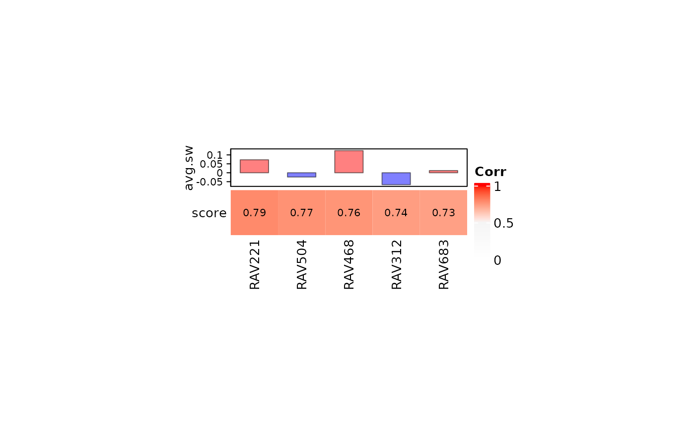
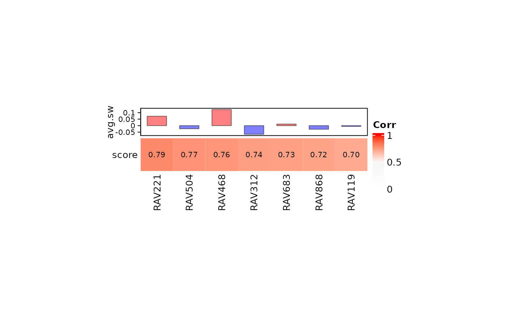
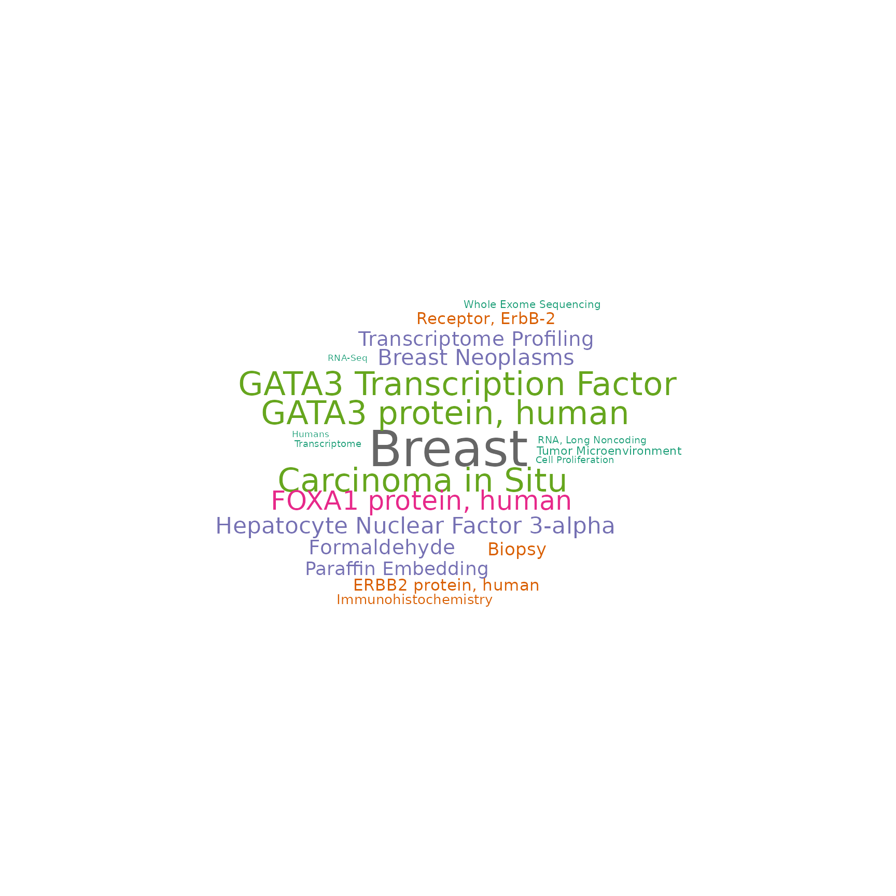
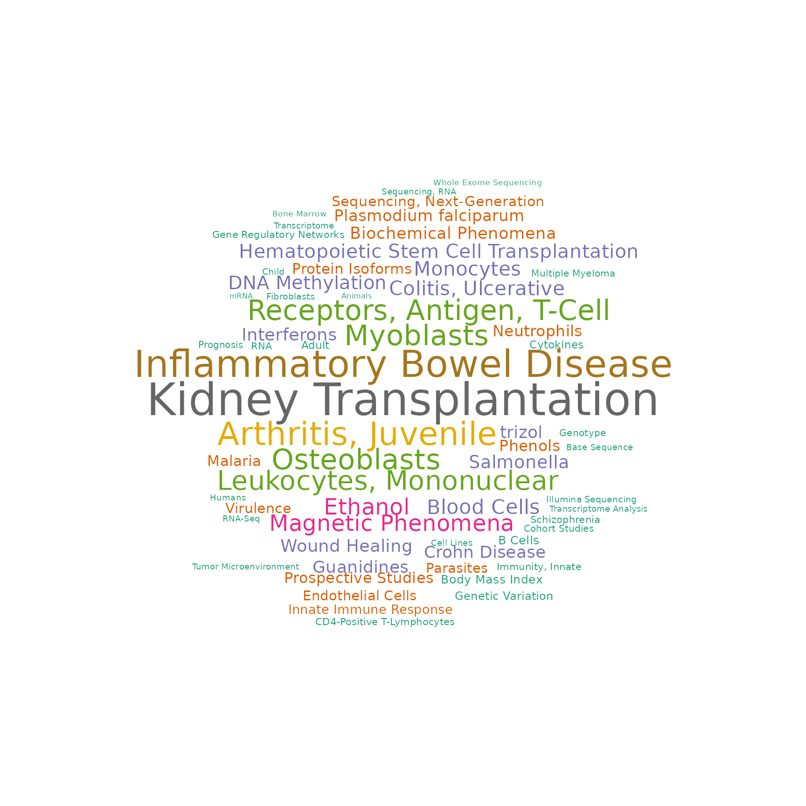
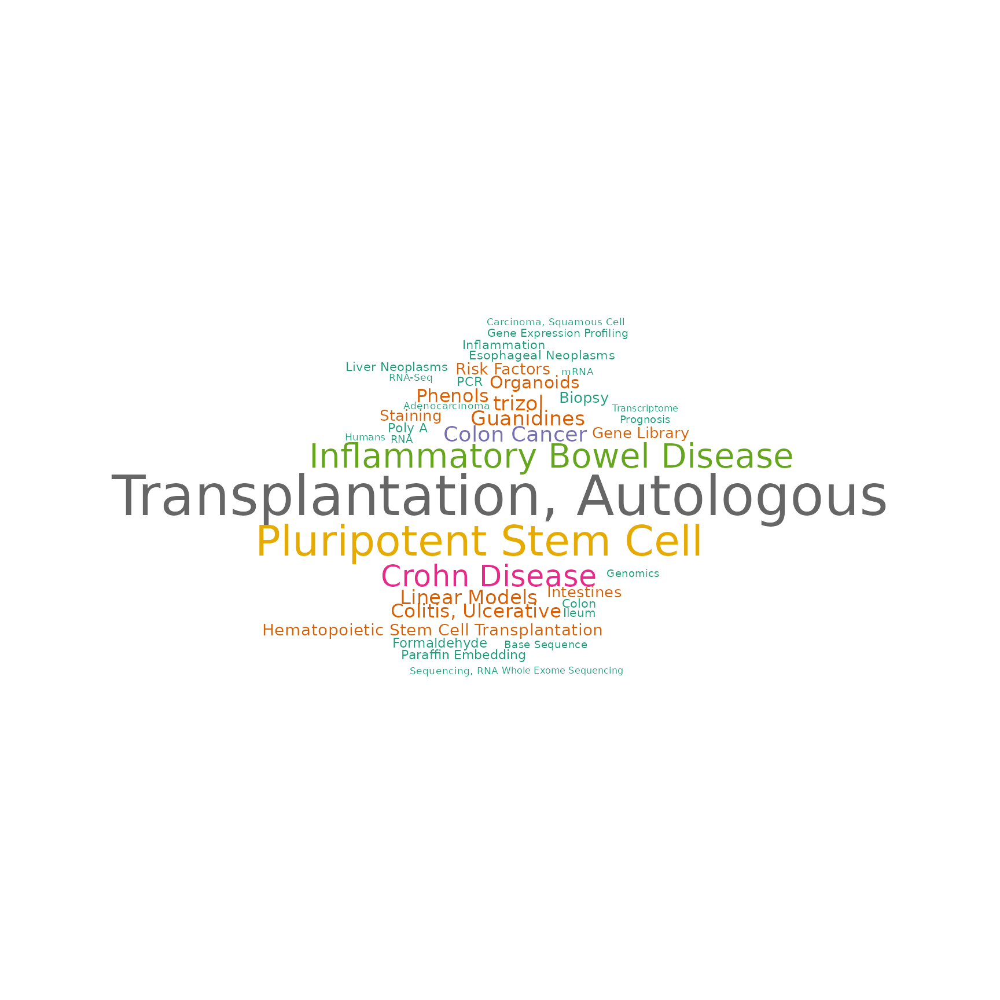

Analyze TCGA data using RAVmodel
Sehyun Oh
2022-03-24
Source:vignettes/TCGA/TCGA_5studies.Rmd
TCGA_5studies.RmdAbstract
Source CodeSetup
To demonstrate the ability to match datasets under new analysis to relevant published datasets, we applied RAVmodel on five TCGA datasets.
Load packages
suppressPackageStartupMessages({
library(GenomicSuperSignature)
library(dplyr)
library(ggplot2)
library(magick)
})
## Warning: package 'GenomicSuperSignature' was built under R version 4.1.3TCGA datasets
TCGA_validationDatasets is a list containing 6 TCGA datasets: COAD, BRCA, LUAD, READ, UCEC, and OV. First 5 are raw read counts from GSEABenchmarkeR package with log2(count + 1) transformation. FYI, GSEABenchmarkeR::loadEData excludes genes with cpm < 2 in more than half of the samples. TCGA-OV dataset is from curatedOvarianData package. These datasets were assembled using Results/TCGA/R/build_TCGA_validationDatasets.R script.
RAVmodel
We use RAVmodel annotated with MSigDB C2 gene sets.
RAVmodel <- getModel("C2", load=TRUE)
RAVmodel
## class: PCAGenomicSignatures
## dim: 13934 4764
## metadata(8): cluster size ... version geneSets
## assays(1): RAVindex
## rownames(13934): CASKIN1 DDX3Y ... CTC-457E21.9 AC007966.1
## rowData names(0):
## colnames(4764): RAV1 RAV2 ... RAV4763 RAV4764
## colData names(4): RAV studies silhouetteWidth gsea
## trainingData(2): PCAsummary MeSH
## trainingData names(536): DRP000987 SRP059172 ... SRP164913 SRP188526
version(RAVmodel)
## [1] "1.1.1"Comparison Ver.1 (TCGA only)
heatmapTable (all)
We plot the heatmapTable of the validation result from multiple studies. It seems like RAV221 and RAV868 are specific to BRCA while RAV832 is strongly associated with colon/rectal cancers.
## This process takes little time due to the size of datasets.
val_all <- validate(datasets, RAVmodel)
heatmapTable(val_all, RAVmodel) 
heatmapTable (one dataset)
If you provide validation result from one dataset, heatmapTable also returns the average silhouette width as a reference.
BRCA
RAV221 shows the highest validation score with the positive average silhouette width.
val_brca <- validate(datasets[["BRCA"]], RAVmodel)
heatmapTable(val_brca, RAVmodel)
RAV868 doesn’t ranked top 5, so we checked a couple more top validated RAVs. RAV868 is scored 6th with the negative average silhouette width.
heatmapTable(val_brca, RAVmodel, num.out = 7) 
MeSH terms and associated studies
BRCA-associated
RAV221 and RAV868 are specific to BRCA.
RAV221
RAV221 consists of three breast cancer studies (ERP016798, SRP023262, and SRP11343) and top 10 enriched pathways are associated with breast cancer.
ind <- 221
findStudiesInCluster(RAVmodel, ind, studyTitle = TRUE)
## studyName PC Variance explained (%)
## 1 ERP016798 2 8.25
## 2 SRP023262 9 1.07
## 3 SRP111343 3 4.46
## title
## 1 Whole transcriptome profiling of 63 breast cancer tumours
## 2 A shared transcriptional program in early breast neoplasias despite genetic and clinical distinctions
## 3 RNAseq analysis of chemotherapy and radiation therapy-naïve breast tumors
subsetEnrichedPathways(RAVmodel, ind, include_nes = TRUE) %>% as.data.frame
## RAV221.Description RAV221.NES
## Up_1 SMID_BREAST_CANCER_BASAL_DN 3.423676
## Up_2 SMID_BREAST_CANCER_LUMINAL_B_UP 3.119584
## Up_3 DOANE_BREAST_CANCER_ESR1_UP 3.081407
## Up_4 VANTVEER_BREAST_CANCER_ESR1_UP 3.065605
## Up_5 LIEN_BREAST_CARCINOMA_METAPLASTIC_VS_DUCTAL_DN 2.998661
## Up_6 CHARAFE_BREAST_CANCER_LUMINAL_VS_BASAL_UP 2.945720
## Up_7 CHARAFE_BREAST_CANCER_LUMINAL_VS_MESENCHYMAL_UP 2.926833
## Up_8 SMID_BREAST_CANCER_RELAPSE_IN_BONE_UP 2.890445
## Up_9 SMID_BREAST_CANCER_RELAPSE_IN_BRAIN_DN 2.787022
## Up_10 POOLA_INVASIVE_BREAST_CANCER_DN 2.729454
drawWordcloud(RAVmodel, ind)
RAV868
ind <- 868
findStudiesInCluster(RAVmodel, ind, studyTitle = TRUE)
## studyName PC Variance explained (%)
## 1 SRP014428 2 8.26
## 2 SRP111343 1 29.18
## 3 SRP111343 2 8.91
## 4 SRP158730 2 9.97
## 5 SRP163173 3 4.62
## 6 SRP163173 4 3.32
## 7 SRP169094 3 7.11
## title
## 1 Full-length mRNA-Seq from single-cell levels of RNA and individual circulating tumor cells
## 2 RNAseq analysis of chemotherapy and radiation therapy-naïve breast tumors
## 3 RNAseq analysis of chemotherapy and radiation therapy-naïve breast tumors
## 4 Separation of breast cancer and organ microenvironment transcriptomes in metastases
## 5 Integrative epigenetic taxonomy of primary prostate cancer [RNA-Seq]
## 6 Integrative epigenetic taxonomy of primary prostate cancer [RNA-Seq]
## 7 On-Treatment Biomarkers Improve Prediction of Response to Neoadjuvant Chemotherapy in Breast Cancer
subsetEnrichedPathways(RAVmodel, ind, include_nes = TRUE) %>% as.data.frame
## RAV868.Description RAV868.NES
## Up_1 CHARAFE_BREAST_CANCER_LUMINAL_VS_MESENCHYMAL_UP 3.301769
## Up_2 LIEN_BREAST_CARCINOMA_METAPLASTIC_VS_DUCTAL_DN 3.179113
## Up_3 CHARAFE_BREAST_CANCER_LUMINAL_VS_BASAL_UP 2.913208
## Up_4 DOANE_BREAST_CANCER_ESR1_UP 2.898072
## Up_5 ROSTY_CERVICAL_CANCER_PROLIFERATION_CLUSTER 2.887952
## Up_6 LIM_MAMMARY_STEM_CELL_DN 2.871481
## Up_7 COLDREN_GEFITINIB_RESISTANCE_DN 2.861499
## Up_8 VANTVEER_BREAST_CANCER_ESR1_UP 2.735316
## Up_9 SOTIRIOU_BREAST_CANCER_GRADE_1_VS_3_UP 2.729398
## Up_10 HOLLERN_EMT_BREAST_TUMOR_DN 2.699715
drawWordcloud(RAVmodel, ind)
COAD/READ-associated
Heatmap table above shows that RAV832 is specifically associated with COAD and READ datasets.
RAV832
ind <- 832
findStudiesInCluster(RAVmodel, ind, studyTitle = TRUE)
## studyName PC Variance explained (%)
## 1 SRP010181 2 8.67
## 2 SRP029880 1 20.16
## 3 SRP068591 4 3.03
## 4 SRP073267 9 2.16
## 5 SRP123604 9 0.66
## title
## 1 Derivation of HLA types from shotgun sequence datasets
## 2 Gene expression profiling study by RNA-seq in colorectal cancer
## 3 Gene signature in sessile serrated polyps identifies colon cancer subtype
## 4 Impact of RNA degradation on fusion detection by RNA-seq
## 5 Immune Profiling of Premalignant Lesions in Patients with Lynch Syndrome
subsetEnrichedPathways(RAVmodel, ind, include_nes = TRUE) %>% as.data.frame
## RAV832.Description
## Up_1 SABATES_COLORECTAL_ADENOMA_UP
## Up_2 HSIAO_LIVER_SPECIFIC_GENES
## Up_3 GRADE_COLON_AND_RECTAL_CANCER_UP
## Up_4 REACTOME_EUKARYOTIC_TRANSLATION_ELONGATION
## Up_5 REACTOME_SRP_DEPENDENT_COTRANSLATIONAL_PROTEIN_TARGETING_TO_MEMBRANE
## Up_6 KOBAYASHI_EGFR_SIGNALING_24HR_DN
## Up_7 KEGG_RIBOSOME
## Up_8 LEE_LIVER_CANCER_ACOX1_DN
## Up_9 REACTOME_METABOLISM_OF_AMINO_ACIDS_AND_DERIVATIVES
## Up_10 REACTOME_REGULATION_OF_EXPRESSION_OF_SLITS_AND_ROBOS
## RAV832.NES
## Up_1 3.024180
## Up_2 2.902520
## Up_3 2.815155
## Up_4 2.685421
## Up_5 2.667746
## Up_6 2.647969
## Up_7 2.642869
## Up_8 2.635660
## Up_9 2.601229
## Up_10 2.598015
drawWordcloud(RAVmodel, ind)
Comparison Ver.2 (TCGA + others)
heatmapTable (all)
Here, we plot heatmap table of validation scores from five TCGA RNA sequencing, SLE-WB microarray and four colon cancer microarray datasets. scoreCutoff is set to 0.68 instead of the default 0.7. The below table includes RAVs that validate any of the ten datasets with the validation score 0.68 or higher.
Based on this multi-datasets validation table,
- RAV23 and RAV1551 are SLE-specific
- RAV188 is COAD-specific while RAV832 seems to be associated with both COAD and READ
MeSH terms and associated studies
SLE-associated
RAV23
ind <- 23
findStudiesInCluster(RAVmodel, ind, studyTitle = TRUE)
## studyName PC Variance explained (%)
## 1 DRP001953 3 5.34
## 2 ERP114104 2 3.40
## 3 SRP051848 1 5.07
## 4 SRP051848 2 3.49
## 5 SRP059039 2 6.55
## 6 SRP089814 1 22.78
## 7 SRP110609 1 40.27
## 8 SRP118733 5 2.98
## 9 SRP132018 1 16.12
## 10 SRP136057 1 18.44
## 11 SRP136108 2 13.01
## 12 SRP150419 1 23.86
## 13 SRP150595 2 12.57
## title
## 1 Interactive Transcriptome Analysis of Malaria Patients and Infecting Plasmodium falciparum in Indonesia
## 2 Altered Gene Expression in Antipsychotic Induced Weight Gain
## 3 Gene Networks Specific for Innate Immunity Define Post-traumatic Stress Disorder [RNA-Seq]
## 4 Gene Networks Specific for Innate Immunity Define Post-traumatic Stress Disorder [RNA-Seq]
## 5 Elucidating the etiology and molecular pathogenicity of infectious diarrhea by high throughput RNA sequencing
## 6 Differentially Expressed Gene Transcripts Using RNA Sequencing from the Blood of Immunosuppressed Kidney Allograft Recipients
## 7 RNA-sequencing analysis of response to P.falciparum infection in Fulani and Mossi ethnic groups, Burkina Faso
## 8 Transcriptomic analysis of Multiple Myeloma bone marrow microenvironment
## 9 In-vitro stimulation of healthy donor blood with IL-3 cytokine
## 10 Whole Blood Transcriptome Profiling in Juvenile Idiopathic Arthritis and Inflammatory Bowel Disease
## 11 RNA-seq of nine primary human cell types exposed in vitro to methylprednisolone
## 12 Haemopedia: Human Haematopoietic Gene Expression
## 13 Homo sapiens Transcriptome or Gene expression
subsetEnrichedPathways(RAVmodel, ind, include_nes = TRUE) %>% as.data.frame
## RAV23.Description
## Up_1 KEGG_RIBOSOME
## Up_2 REACTOME_SRP_DEPENDENT_COTRANSLATIONAL_PROTEIN_TARGETING_TO_MEMBRANE
## Up_3 REACTOME_EUKARYOTIC_TRANSLATION_ELONGATION
## Up_4 REACTOME_SELENOAMINO_ACID_METABOLISM
## Up_5 REACTOME_RRNA_PROCESSING
## Up_6 REACTOME_TRANSLATION
## Up_7 MANALO_HYPOXIA_DN
## Up_8 CAIRO_HEPATOBLASTOMA_CLASSES_UP
## Up_9 PUJANA_BRCA2_PCC_NETWORK
## Up_10 WONG_EMBRYONIC_STEM_CELL_CORE
## RAV23.NES
## Up_1 2.375247
## Up_2 2.329551
## Up_3 2.297810
## Up_4 2.207530
## Up_5 2.206472
## Up_6 2.083702
## Up_7 1.839116
## Up_8 1.796250
## Up_9 1.790144
## Up_10 1.782756
drawWordcloud(RAVmodel, ind)
RAV1551
ind <- 1551
findStudiesInCluster(RAVmodel, ind, studyTitle = TRUE)
## studyName PC Variance explained (%)
## 1 SRP051688 1 34.30
## 2 SRP056840 4 2.55
## 3 SRP062966 2 6.72
## 4 SRP071965 2 3.64
## 5 SRP105369 1 27.17
## 6 SRP131037 4 2.07
## 7 SRP150595 3 4.37
## 8 SRP150872 1 12.02
## title
## 1 A Cell-based Systems Biology Assessment of Human Blood to Monitor Immune Responses After Influenza Vaccination
## 2 Renal systems biology of patients with systemic inflammatory response syndrome
## 3 SLE lupus RNA-seq
## 4 A blood RNA signature for tuberculosis disease risk: a prospective cohort study
## 5 Transcriptome analysis of G protein-coupled receptors in distinct genetic subgroups of acute myeloid leukemia: identification of potential disease-specific targets
## 6 Using Next-Generation Sequencing Transcriptomics to Determine Markers of Post-traumatic Symptoms - preliminary findings from a post-deployment cohort
## 7 Homo sapiens Transcriptome or Gene expression
## 8 Discovering in vivo cytokine eQTL interactions from a lupus clinical trial
subsetEnrichedPathways(RAVmodel, ind, include_nes = TRUE) %>% as.data.frame
## RAV1551.Description RAV1551.NES
## Up_1 THEILGAARD_NEUTROPHIL_AT_SKIN_WOUND_DN 2.985137
## Up_2 REACTOME_NEUTROPHIL_DEGRANULATION 2.969165
## Up_3 ALTEMEIER_RESPONSE_TO_LPS_WITH_MECHANICAL_VENTILATION 2.849620
## Up_4 VERHAAK_AML_WITH_NPM1_MUTATED_UP 2.829289
## Up_5 VERHAAK_GLIOBLASTOMA_MESENCHYMAL 2.781736
## Up_6 HAHTOLA_MYCOSIS_FUNGOIDES_CD4_UP 2.780172
## Up_7 BROWN_MYELOID_CELL_DEVELOPMENT_UP 2.706406
## Up_8 TAKEDA_TARGETS_OF_NUP98_HOXA9_FUSION_8D_DN 2.634994
## Up_9 LENAOUR_DENDRITIC_CELL_MATURATION_DN 2.585634
## Up_10 SMIRNOV_CIRCULATING_ENDOTHELIOCYTES_IN_CANCER_UP 2.557038
drawWordcloud(RAVmodel, ind)
COAD-specific
ind <- 188
findStudiesInCluster(RAVmodel, ind, studyTitle = TRUE)
## studyName PC Variance explained (%)
## 1 ERP013206 5 1.79
## 2 ERP023272 5 2.61
## 3 ERP023550 1 31.81
## 4 SRP029880 4 5.67
## 5 SRP077046 2 13.19
## 6 SRP149847 1 19.84
## title
## 1 Whole transcriptome profiling of Esophageal adenocarcinoma and Barrett's
## 2 RNA-seq of formalin-fixed, paraffin-embedded uninvolved terminal ileal tissue obtained from ileo-colic resection surgeries of Crohn’s disease and control patients
## 3 RNA-seq of human intestinal organoids colonized with E. coli and other immature intestinal tissues
## 4 Gene expression profiling study by RNA-seq in colorectal cancer
## 5 A functional genomics predictive network model identifies regulators of inflammatory bowel disease: Mount Sinai Hospital (MSH) Population Specimen Collection and Profiling of Inflammatory Bowel Disease
## 6 Differences in tissue immune cell populations following hematopoietic stem cell transplantation in Crohn's disease patients
subsetEnrichedPathways(RAVmodel, ind, include_nes = TRUE) %>% as.data.frame
## RAV188.Description RAV188.NES
## Up_1 SCHUETZ_BREAST_CANCER_DUCTAL_INVASIVE_UP 2.881810
## Up_2 VECCHI_GASTRIC_CANCER_ADVANCED_VS_EARLY_UP 2.831062
## Up_3 LIM_MAMMARY_STEM_CELL_UP 2.709338
## Up_4 ANASTASSIOU_MULTICANCER_INVASIVENESS_SIGNATURE 2.669321
## Up_5 BOQUEST_STEM_CELL_UP 2.642661
## Up_6 CHARAFE_BREAST_CANCER_LUMINAL_VS_MESENCHYMAL_DN 2.612064
## Up_7 LINDGREN_BLADDER_CANCER_CLUSTER_2B 2.610865
## Up_8 SMID_BREAST_CANCER_NORMAL_LIKE_UP 2.593221
## Up_9 PICCALUGA_ANGIOIMMUNOBLASTIC_LYMPHOMA_UP 2.590871
## Up_10 TURASHVILI_BREAST_LOBULAR_CARCINOMA_VS_DUCTAL_NORMAL_UP 2.576219
drawWordcloud(RAVmodel, ind)
Manuscript Figures
Fig 2. Connect new data with the existing databases
A RAVmodel provides a rich resource for understanding new or user-supplied datasets in the context of all other RAVmodel datasets. A) Validation of multiple datasets. Each dataset was subjected to PCA and correlated to all possible RAVs using Pearson correlation. RAVs with correlation above 0.7 in at least one dataset were included. RAV221 and RAV868 seem to be associated with breast cancer while RAV832 is associated with colon and rectal cancer. B) Validation of a single dataset, TCGA-BRCA. Top 5 validated RAVs (score, bottom panel) and their average silhouette width (avg.sw, top panel) are shown. C) MeSH terms associated with RAV221 can aid in interpreting the biological context of the RAV when plotted as a word cloud. D) Studies contributing to RAV221. Study accession number (studyName column) and the title of a study (title column) are shown here. E) Top 10 enriched pathways in RAV221.
## Warning: package 'EBImage' was built under R version 4.1.3
Sup.Fig 4. Colon and rectal cancer associated RAV
Based on Figure 2A, RAV832 seems to be associated with TCGA-COAD and TCGA-READ. Top validation results of A) TCGA-COAD and B) TCGA-READ include RAV832 with the negative average silhouette width. C) MeSH terms associated with RAV832. D) Studies contributing to RAV832. E) MSigDB C2 gene sets enriched in RAV832.
Session Info
sessionInfo()
## R version 4.1.2 (2021-11-01)
## Platform: x86_64-pc-linux-gnu (64-bit)
## Running under: Ubuntu 20.04.3 LTS
##
## Matrix products: default
## BLAS/LAPACK: /usr/lib/x86_64-linux-gnu/openblas-pthread/libopenblasp-r0.3.8.so
##
## locale:
## [1] LC_CTYPE=en_US.UTF-8 LC_NUMERIC=C
## [3] LC_TIME=en_US.UTF-8 LC_COLLATE=en_US.UTF-8
## [5] LC_MONETARY=en_US.UTF-8 LC_MESSAGES=en_US.UTF-8
## [7] LC_PAPER=en_US.UTF-8 LC_NAME=C
## [9] LC_ADDRESS=C LC_TELEPHONE=C
## [11] LC_MEASUREMENT=en_US.UTF-8 LC_IDENTIFICATION=C
##
## attached base packages:
## [1] stats4 stats graphics grDevices utils datasets methods
## [8] base
##
## other attached packages:
## [1] EBImage_4.36.0 magick_2.7.3
## [3] ggplot2_3.3.5 dplyr_1.0.8
## [5] GenomicSuperSignature_1.3.6 SummarizedExperiment_1.24.0
## [7] Biobase_2.54.0 GenomicRanges_1.46.1
## [9] GenomeInfoDb_1.30.1 IRanges_2.28.0
## [11] S4Vectors_0.32.3 BiocGenerics_0.40.0
## [13] MatrixGenerics_1.6.0 matrixStats_0.61.0
## [15] BiocStyle_2.22.0
##
## loaded via a namespace (and not attached):
## [1] colorspace_2.0-3 ggsignif_0.6.3 rjson_0.2.21
## [4] ellipsis_0.3.2 rprojroot_2.0.2 circlize_0.4.14
## [7] XVector_0.34.0 fftwtools_0.9-11 GlobalOptions_0.1.2
## [10] fs_1.5.2 clue_0.3-60 ggpubr_0.4.0
## [13] bit64_4.0.5 fansi_1.0.2 codetools_0.2-18
## [16] doParallel_1.0.17 cachem_1.0.6 knitr_1.37
## [19] jsonlite_1.8.0 broom_0.7.12 cluster_2.1.2
## [22] dbplyr_2.1.1 png_0.1-7 BiocManager_1.30.16
## [25] readr_2.1.2 compiler_4.1.2 httr_1.4.2
## [28] backports_1.4.1 assertthat_0.2.1 Matrix_1.4-0
## [31] fastmap_1.1.0 cli_3.2.0 htmltools_0.5.2
## [34] tools_4.1.2 gtable_0.3.0 glue_1.6.2
## [37] GenomeInfoDbData_1.2.7 rappdirs_0.3.3 Rcpp_1.0.8.3
## [40] carData_3.0-5 jquerylib_0.1.4 pkgdown_2.0.2
## [43] vctrs_0.3.8 iterators_1.0.14 xfun_0.30
## [46] stringr_1.4.0 lifecycle_1.0.1 rstatix_0.7.0
## [49] zlibbioc_1.40.0 scales_1.1.1 vroom_1.5.7
## [52] ragg_1.2.2 hms_1.1.1 parallel_4.1.2
## [55] RColorBrewer_1.1-2 ComplexHeatmap_2.10.0 yaml_2.3.5
## [58] curl_4.3.2 memoise_2.0.1 sass_0.4.0
## [61] stringi_1.7.6 RSQLite_2.2.10 highr_0.9
## [64] desc_1.4.1 foreach_1.5.2 tiff_0.1-11
## [67] filelock_1.0.2 shape_1.4.6 rlang_1.0.2
## [70] pkgconfig_2.0.3 systemfonts_1.0.4 bitops_1.0-7
## [73] evaluate_0.15 lattice_0.20-45 purrr_0.3.4
## [76] htmlwidgets_1.5.4 bit_4.0.4 tidyselect_1.1.2
## [79] here_1.0.1 magrittr_2.0.2 bookdown_0.25
## [82] R6_2.5.1 generics_0.1.2 DelayedArray_0.20.0
## [85] DBI_1.1.2 pillar_1.7.0 withr_2.5.0
## [88] abind_1.4-5 RCurl_1.98-1.6 tibble_3.1.6
## [91] crayon_1.5.0 car_3.0-12 wordcloud_2.6
## [94] utf8_1.2.2 BiocFileCache_2.2.1 tzdb_0.2.0
## [97] rmarkdown_2.13 jpeg_0.1-9 GetoptLong_1.0.5
## [100] locfit_1.5-9.5 grid_4.1.2 blob_1.2.2
## [103] digest_0.6.29 tidyr_1.2.0 textshaping_0.3.6
## [106] munsell_0.5.0 bslib_0.3.1